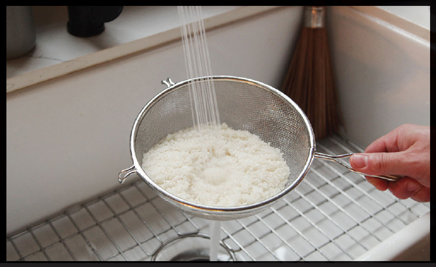
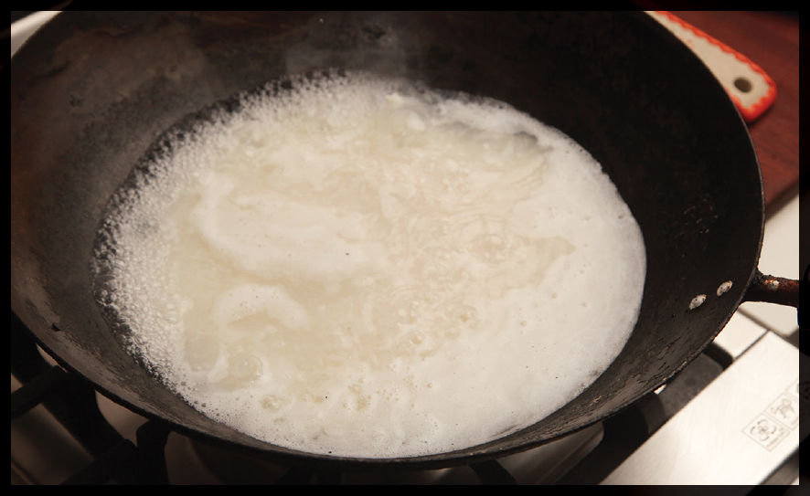
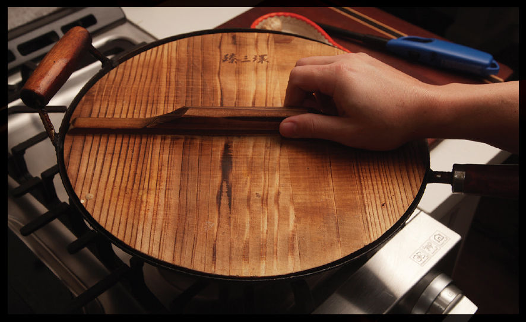
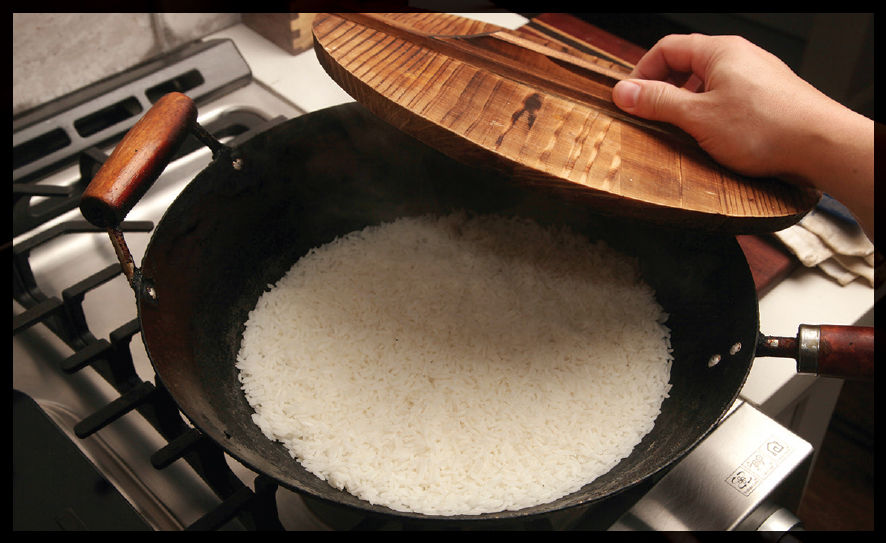

The Best Way to Cook Rice, or, How I Learned to Stop Worrying and Love the Rice Cooker
I can’t cook rice. It’s just one of my many deficiencies, but the one that gave me the most embarrassment in the kitchen. We’ve heard about those sushi masters who make their apprentices cook nothing but rice for decades before being allowed to even begin to think about starting to glance in the direction of a fish or a knife. This is a reasonable approach if instilling honor and discipline with a healthy bit of hazing is your goal. But as it turns out, there is zero correlation between one’s ability to cook great rice and one’s ability to serve great rice.
Just do what virtually every modern Japanese household does: get a rice cooker. You don’t need a fancy one. Even the simplest will cook rice more evenly and consistently at the touch of a button than you’ll ever achieve on the stovetop. They work via a simple but ingenious sensor mechanism that mechanically disengages the electronic circuit powering a heating element as soon as the temperature at the base of the pot rises above the boiling temperature of water, an indication that the liquid has been absorbed by the rice.
Fancier models from brands like Zojirushi will have different settings for different grains, will monitor the contents of the pot and make adjustments on the fly using fuzzy logic circuits, will have timers to deliver hot rice first thing in the morning or when you get home from work, and will be better at keeping your rice warm. It’s the best way to produce flawless rice over and over and what’s more, there’s no fiddling with the heat, setting timers, or doing that thing where you worry the rice isn’t cooking right so you crack the lid to check and the steam escapes and then your rice actually doesn’t cook right.
Personally, I use an electric countertop multi-cooker on the pressure cooker setting, which cooks rice faster and as well as most dedicated rice cookers, and does whole slew of other useful things. InstantPot makes a number of models with different sizes and features at a price that fits most budgets. The Breville Fast-Slow Pro is my top pick for electric multi-cookers if you’ve got a little more money to invest in features and performance.
To cook rice in a pressure cooker, add the rice and the volume of water listed on the package, then set the pressure cooker to low (7.5 psi) and cook white rice for 5 minutes after the pressure has been achieved, or brown rice for 10 minutes. Release the pressure with a series of short bursts, or if you’re not in a hurry, allow for a natural release.
I can’t cook rice, but my multicooker sure can.
HOW TO COOK RICE WITHOUT A RICE COOKER OR PRESSURE COOKER
Alright, I do actually know how to cook rice without a pressure cooker or rice cooker. It’s not too difficult. Here are the basic steps:
Step 1 • Measure and Rinse the Rice (Rinsing Optional)

Rinsing rice will remove excess starch and make it less clumpy and sticky. Whether this is a good thing is up to personal preference and your intended use. I typically do not rinse my rice unless I’m going to use it immediately for fried rice (see here).
If not rinsing, this step is straightforward. Just measure the rice and water using the chart on here, then transfer it to a saucepan large enough that the combined rice and water comes no higher than three-quarters of the way up the pan. If you have a tight-fitting wooden lid for your wok, you can use that in place of the saucepan.
The one snag that rinsing introduces is that the water that clings to the rice after rinsing throws the ratio of water to rice off. To solve this problem, I first measure my rice and water by volume, then combine them in a liquid measuring cup, noting the level of the top of the water on the side of the cup.
Next, I drain the rice in a fine-mesh strainer and run it under cool running water, agitating it until the water runs clear—an indication that the excess surface starch has been removed. I then transfer it back to the liquid measuring cup and refill it with water up to the level I had noted earlier.
Finally, I transfer the perfectly measured rice and water to my cooking vessel.
Step 2 • Season as Desired
Typically, rice served alongside stir-fries or other Asian dishes is unseasoned. It is meant as a mild counterpart to intensely flavored dishes. But if you like salt in your rice, go ahead and add a pinch or two to the water before cooking. You can also season your rice with aromatics like bay leaves, cinnamon sticks, star anise, and other whole spices at this stage if desired.
Step 3 • Bring to a Boil

Bring the rice and water to a boil over high heat, stirring once or twice as it heats up to ensure that the rice is not stuck to the bottom of the pot.
Step 4 • Simmer

As soon as the rice boils, cover the pot or wok with a tight-fitting lid (if your lid is a little loose, you can wrap it in a damp kitchen towel before placing it on the pot or wok to form a tighter seal), reduce the heat to the minimum your stovetop can handle, and let the rice cook undisturbed for 10 minutes. Peeking during cooking can release steam and heat, so don’t do it, even if you’re tempted to, and definitely do not stir!
Step 5 • Rest

After 10 minutes, completely shut off the heat and let the rice rest for another 5 to 10 minutes to finish absorbing water. At this point you can hold the rice off the heat in the lidded pot until ready to serve.